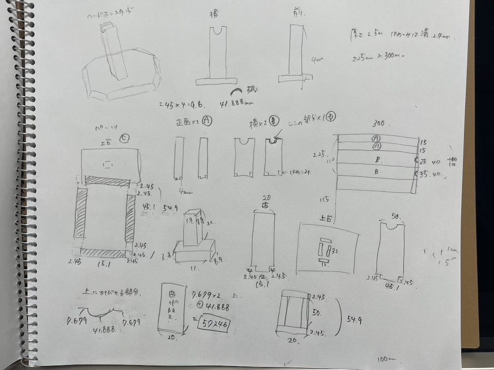
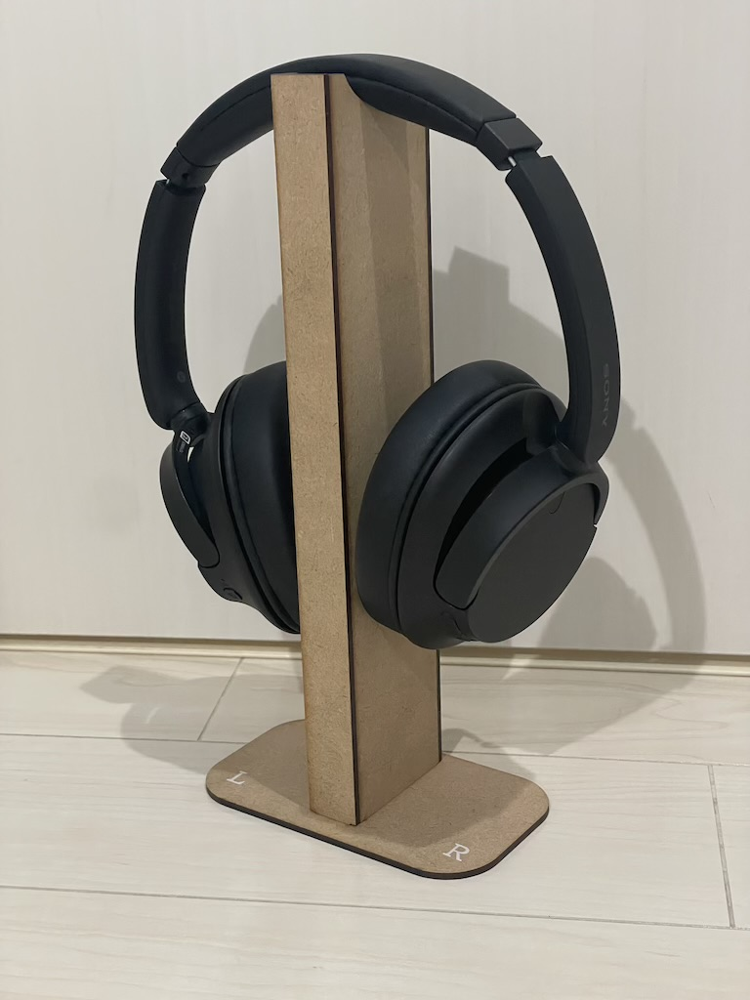
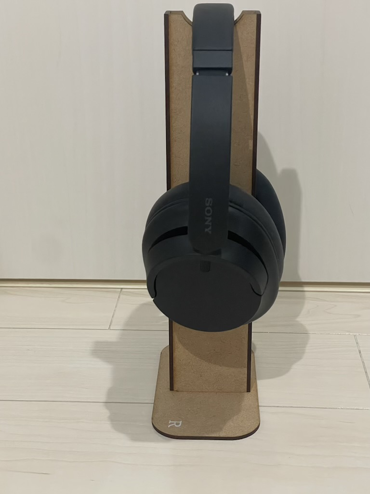
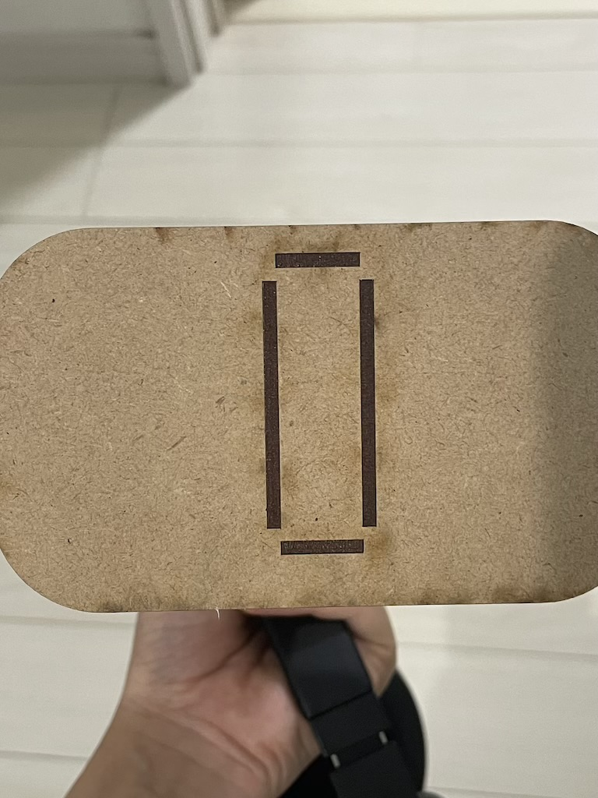

ヘッドフォンスタンドスタンド🎧
~作品のタイトル~
心地よい音楽
~構想段階のスケッチ~

土台となる台に柱がピッタリとハマるように幅を計算し作図した。
ヘッドホンの高さも考慮し、かける部分もヘッドホンの幅に合うように作図した。
~出来上がった作品~


全てのパーツがずれることなくピッタリに作ることができた。
土台にも綺麗にはめることができた！

~設計ファイル~
~この作品について~
実用的で一年を通して利用できるもの作ろうと考えた。
いつも机の上においてしまうヘッドフォンを、スタンドにかけておいたらとてもカッコ良いのではないかと思い、作成した。
シンプルでピッタリフィットした形が美しく、ヘッドフォンをよりカッコよく見せることができる。
実際に机においてみたところ、部屋の雰囲気が一気に変わったように感じる。とてもテンションが上がる仕上がりになった。
~作成プロセスの中で調べたこと~
Curved Laser Bent Wood
曲げ加工をヘッドホンをかける部分につけようとしたが、うまく切れ込みがカットされておらず、曲げることができなかった。
また、今回ははめ込みがうまくできるように力を入れていたため、それぞれのパーツを板として作成してしまったが箱を作る図面を活用すればよかったと反省している。
MakerCaseの使い方
他にも文字を彫刻しようとしたが取り掛かることができなかったため、今度は彫刻込みでさらに良い作品を作りたい。